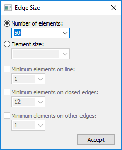

Edge Size dialog box
The Edge Size dialog box is displayed when you choose the Simulation tab→Mesh group→Edge Size command to refine the mesh applied to edges.
See Mesh sizing to learn about refining the mesh.

- Number of elements
-
If blank, uses element length.
You can enter a nominal value in the Element size box to override default mesh sizing on curves associated with a surface, or to define a mesh on all curves that do not currently have a mesh size. This value is adjusted to fit evenly into each curve.
Values range from 0 to 90.
- Element size
-
Modifies the default edge mesh sizing options that you can apply when refining a mesh you generated previously.
The Element size options are not typically used if you are setting the mesh size on a single curve. What they allow you to do, however, is use a single command to select many curves (possibly your entire model), specify a fairly large mesh size, and still obtain some mesh refinement around desired curves.
- Minimum elements on line
-
Ensures that each straight line in your model will have at least a specified number of elements.
Values range from 0 to 90.
- Minimum elements on closed edges
-
Specifies the minimum number of elements that will be placed along any closed edge, like an arc or circle.
Values range from 0 to 90.
- Minimum elements on other edges
-
Applies a minimum to curves that are neither straight lines nor closed edges, like splines.
Values range from 0 to 90.
How do I
Mesh the modelActivity: Use subjective mesh sizing
Activity: Apply a surface mesh to a sheet metal part
Activity: Size the mesh on an edge
Activity: Size the mesh on a surface
Learn more
MeshesMesh sizing
Examining the mesh
Identifying areas of poor mesh quality
Look up more details
Mesh dialog boxMesh Options dialog box
Body Size dialog box
Surface Size dialog box
Check Element Quality